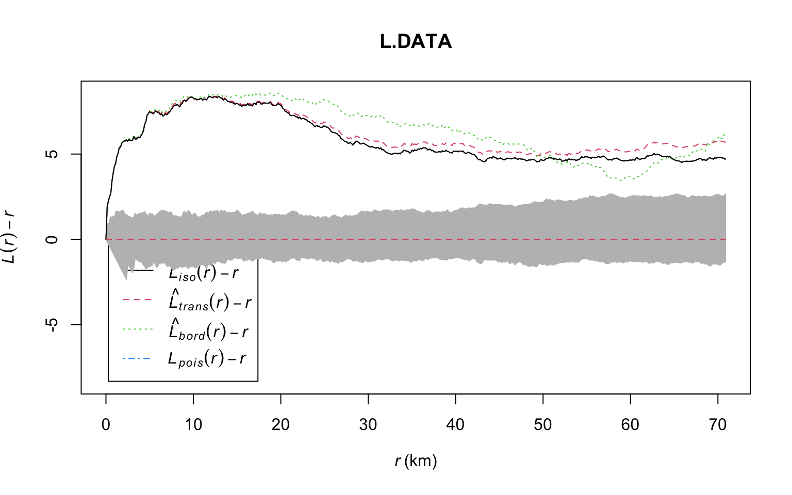

Lab 7: Point Pattern
Welcome to Lab 7!
Welcome to your final lab, where we are going to focus on Point Pattern Analysis, a specific set of spatial statistics tools we are can use for point datasets. A point dataset can be anything with a specific location, from stars, to greenhouses.
You will also be showing me that you can do each element of report writing process.
We will be focusing on:
- Descriptive statistics
- Density based spatial statistics (Kernel smoothing, quadrat analysis)
- Distance based spatial statistics ( nearest neighbour analysis and the F, G, K and L functions.)
- We will also work on downloading raster elevation and population density data
SEE CANVAS FOR SUBMISSION DATES.
Get help
If a link to a tutorial is broken, you should be able to go to the tutorial number and find it in the menu.
Teams is the fastest way to get help. CLICK THIS LINK FOR THE TEAMS WEBSITE FOR LAB HELP
1 LAB SET-UP - READ THIS, YOU WILL BE GRADED!
1.1 Create project
- Using R-CLOUD? : click here. This also has instructions on
uploading/downloading code from your computers. https://psu-spatial.github.io/Geog364-2022/index_GEOG364-22_Tutorial_R.html#2_R-Studio_CLOUD
- Using YOUR LAPTOP? : Click here: - https://psu-spatial.github.io/Geog364-2022/index_GEOG364-22_Tutorial_R.html#3_R-Studio_Desktop
1.2 Select template.
Create your markdown file and choose a professional template, such as
PACKAGE rmdformats, PACKAGE rtemps or
PACKAGE prettydoc. You simply need to install the package
from the “app store”, then go to new Markdown FROM TEMPLATE. See the
start of Lab 5 for a reminder. To browse the formats, see here:
- rmdformats : https://github.com/juba/rmdformats
- pretty docs : https://prettydoc.statr.me/themes.html
- rtemps : https://github.com/bblodfon/rtemps
If you want to make websites or other formats, see here: https://r4ds.had.co.nz/r-markdown-formats.html, here: https://bookdown.org/yihui/rmarkdown/tufte-handouts.html or here https://rmarkdown.rstudio.com/formats.html.
1.3 Add libraries
Edit the first “set-up” code chunk so it looks like this and run/knit. You might need additional libraries as you work through the lab. If so, add them in this code chunk AND REMEMBER TO RE-RUN THE CODE CHUNK.
If you see a little yellow bar at the top asking you to install them,click yes! If you find a library doesn’t exist, install it from the app store, then add the library command in here to load.
# SET UP
knitr::opts_chunk$set(cache = TRUE,message=FALSE,warning=FALSE,echo=TRUE)NOTE, I HAVE SPLIT THESE CODE CHUNKS IN TWO FOR THE TOP COMMAND TO PRINT.
PLEASE ALSO SPLIT THEM
# LIBRARIES
library(tidyverse)
library(dplyr)
library(ggpubr)
library(skimr)
library(ggplot2)
library(plotly)
library(knitr)
library(raster)
library(sp)
library(sf)
library(tmap)
library(terra)
library(rnaturalearth)
library(biscale)
library(tidycensus)
library(cowplot)
library(units)
library(remotes)
library(elevatr)
library(RColorBrewer)
library(spatstat)
library(car)
library(maptools)
library(USAboundaries)Note, if you don’t have elevatr, you will need to first install the
remotes package, then run this code IN THE CONSOLE to get
the package.
remotes::install_github("jhollist/elevatr")If car or maptools don’t work, don’t panic, just remove from the code chunk.
1.4 Add a screenshot
- Take a screenshot of your entire screen showing that you are running your project and have created your template. Add this screenshot into your report
Hint: To add a picture, see your old labs or Tutorial 9.6.
1.5 Explain your choices
Under the screenshot, state which markdown template you used and provide a link to the package’s github or CRAN website (bonus if your link is a web-hyperlink that you can click like this)
Then use the citation command in the console to get the citation for your package and include the citation in this section of your report.
For example to cite the skimr package I would typecitation("skimr")then copy this link into my report.- Waring E, Quinn M, McNamara A, Arino de la Rubia E, Zhu H, Ellis S (2022). skimr: Compact and Flexible Summaries of Data. R package version 2.1.4, https://CRAN.R-project.org/package=skimr.
2 FOSSIL DATA ANALYSIS
I have given you much of the code here.
2.1 Data Description
- Use this code to automatically download the data and read it into R.
Remember to retype ALL the quote marks if you get a weird error.
#Where the data is stored
url_data <- "https://raw.githubusercontent.com/hgreatrex/GEOG364_Labs/master/Lab_4/PA_fossils.csv"
#Download it into your project folder and read it into R
download.file(url_data, destfile = "PA_fossils.csv" , verbose=TRUE)
mydata <- read.csv("PA_fossils.csv")Take a look at the data (remember the
View()command).Create a new code chunk and use the dim, names and summary commands to work out how many rows and columns the data has. Use the table command on the period column (or your own method) to see how many fossils were found in the Mississippian time-period.
The data comes from this website: https://paleobiodb.org/.
Have a look around, especially about how the data was collected. We are focusing particularly on Pennsylvania in our subset.Now, USING MY LAB 6 TEMPLATE AS AN EXAMPLE OF STYLE/CONTENT and what you learned from the data/the website, write a BRIEF background section containing all relevant information about the dataset. Feel free to copy/paste my example and change the details! Within this, explain if the data is marked
2.2 Make Spatial, Plot
Make a new sub-section.
- Use this code to download the state borders. Note, some people said Tigris is better for borders. Feel free to use that
#---------------------------------------------------------------------------------# us_states is from the USAboundaries package
#---------------------------------------------------------------------------------
state.border <- us_states(states = "pennsylvania")
state.border.utm <- st_transform(state.border,6346)- Use this code to download a raster of elevations for PA. Edit the code chunk options so that it doesn’t output any text (hint).
#---------------------------------------------------------------------------------
# get_elev_raster is from the elevatr package. Might take a second to download
#---------------------------------------------------------------------------------
elevation.utm <- get_elev_raster(state.border.utm, z = 5,clip="locations")- Using the help files and tutorials as needed, edit these commands so that your data is converted into sf format and the map projection is changed to EPSG code 26918
#------------------------------------------------------------------------------------------------
# Convert data to sf format adn change the map projection. Rename the variables to something
# sensible. crs=4326 is long/lat data. YOU WILL NEED TO EDIT THIS TO MAKE IT WORK
#------------------------------------------------------------------------------------------------
XXXX_sf <- st_as_sf( XXXX, coords = c("COLUMN_NAME X COORDS", "COLUMN_NAME Y COORDS"), crs=4326)
# overwrite with new map projection
XXXX_sf <- st_transform(XXXX_sf,crs=26918)Using this link, https://epsg.io/26918-15839, write below the code chunk what map projection the data has been converted to and whether the units are now in degrees or metres.
Make a nice plot of the data showing me your skills from this semester.
FOR THE SHOW ME SOMETHING NEW ADDITIONAL MARKS, make a nice map of the ELEVATION DATA overlayed with unmarked fossils over the top, AND state border - and making it look good.
2.3 Make ppp version
We are now going to do a point pattern analysis, using a special package called spatstat. This package requires that we convert the data into a new data-format called ppp.
I have provided the code. By examining the as.ppp help file we see that the ppp command requires 4 types of information: - x coordinates of each event and y coordinates of each event (or a “sp” data format) - window size (i.e., region size), - any marks (i.e., values/data for each event).
# This just converts stateowin to a "window" file format
state.window <- as(as_Spatial(state.border.utm), "owin")
# This turns the sf data into a ppp format, then sets the window
fossil_ppp <- as.ppp(fossil_sf)
Window(fossil_ppp) <- state.window
#and then we plot the data
plot(elevation.utm)
plot(fossil_ppp,use.marks = F,cex = 1, pch = 4,lwd=1,add=TRUE)Copy the code above into a new code chunk and make sure it runs. You might get errors about Discarded datum Unknown based on GRS80 ellipsoid in CRS definition, or only first attribute column is used for marks. Ignore them.
Look at the output of the plot, which shows the points plotted over elevation data. Below the code chunk, write your assessment of the spatial structure of the fossils. In your opinion do the locations show positive or negative autocorrelation? What processess (if any) do you think caused this pattern?
2.4 Centography
2.4.1 Standard ellipse
This code plots the data, and adds the “mean centre” and “standard ellipse”. Get it working in your report.
# Plot the elevation
mycolors <- brewer.pal(n=11, name = "BrBG")[-c(1,2,10,11)]
plot(elevation.utm,col=mycolors)
# Add a "standard ellipse" from the car package
# IF THIS DOESN'T WORK, don't include this code and just interpret my plot
dataEllipse(fossil_ppp$x, fossil_ppp$y, levels=0.68,
fill=TRUE, fill.alpha=0.1, # Fill the ellipse with transparent grey
pch=4, cex=1, # little x's
xlab="x (m)",ylab="y (m)",
col= c(rgb(red=0, green=0, blue=0, alpha = 0.5),"blue"),add=TRUE) # Slightly transparent points & blue ellipsestandard ellipse resources. Using the workflowy course notes (chapter 9), or resources online (for example ARCGIS or these other notes),
- Using the resources above: describe what a standard ellipse is in your report. Explain roughly percentage of points fall within this ellipse and why. (hint levels=0.68).
2.5 Point Pattern auto-correlation
There are two families of methods we can use to at the autocorrelation/pattern of the point locations, density based ones or distance based ones.
Density based methods look for areas that points are clustered together and can assess what might be correlated with them. Density based statistics give us an estimate of first order autocorrelation e.g. is there a big underlying thing driving the density of points.
Distance based statistics give an estimate of second order autocorrelation e.g. does one point change the probability of seeing more points (AKA one infectious person is likely to lead to more in the surrounding area).
2.5.1 Density based analyses
2.5.1.1 Global density
The global density is simply the number of points per unit area.
You can calculate the number of points, by calculating the number of rows e.g.
nrow(fossil_sf)(many other methods)You can calculate the area IN METRES of our study area (pennsylvania) by
area(state.window)
- Using the hints above, IN R, calculate the number of fossils PER SQUARE KILOMETER
2.5.1.2 Local: Kernel density
A famous method of density pattern analysis is kernel density. Essentially a heatmap of where the points are densest (different to Getis G because that was about the MARKS of each point) There are some great tutorials
- here https://mgimond.github.io/Spatial/chp11_0.html#kernel-density
- and here: https://www.youtube.com/watch?v=PBZVTjmhl74&t=495s
Here is the code to do it.
# R will work in metres by default, let's switch to km
fossil_ppp.km <- rescale(fossil_ppp, 1000, "km")
# Using a 10km bandwidth (sigma)
Density_kernel_10 <- density(fossil_ppp.km, sigma=10)
plot(Density_kernel_10, main=NULL, las=1)
contour(Density_kernel_10, add=TRUE)Get the code above working in your report. Play with the sigma/bandwidth number (e.g. try 1, 10, 100… ), What does the bandwidth do?
What does the density pattern from a small bandwidth (say 10km) suggest about underlying processes (hint, look at a map of PA). What about a large bandwidth( say, 50km) suggest about the underlying processes?
2.5.1.2.1 Linking kernel density and elevation
We can test some of these things by looking at a map of density vs a covariate. For example elevation:
# convert elevation to a special format
elev.img <- as.im.RasterLayer(elevation.utm)
# calculate the relationship
densityfossil.vs.elevation <- rhohat(unmark(fossil_ppp),elev.img)
plot(densityfossil.vs.elevation)Get this code working in your report (note, if your computer didn’t manage to get maptools, just explain and interpret this output)
Interpret the plot. The x-axis on this plot is elevation, e.g. low lying points are to the left and mountainous points on the right. The y-axis is the density of points in each gridcell.
We can go much further than this at this point, and there are entire courses on point pattern. If you are interested, see:
2.5.2 Distance based analyses
2.5.2.1 Global: Nearest neighbour
The easiest distance based measure is the distance between each point and its nearest neighbour.
#For each point, nndist calculates the distance to the nearest point
fossil.Nearest_neighbor <- nndist(fossil_ppp.km)
# plot
hist(fossil.Nearest_neighbor, main=NULL, las=1,
xlab=list("Distance between each point and its Nearest Neighbour (km)",cex=.8))
# look at the summary
skim(fossil.Nearest_neighbor)Get this code running. What distance are 75% of points closer than? Hhat is the mean distance two points are apart?
Here is the code for a clark evans test. Write out the hypothesis test (e.g. H0, H1..) and interpret the results. note, we will do this in class
# cand
clarkevans.test(fossil_ppp.km)2.5.2.2 Local: L functions
Finally, the L function shows whether the data is clustered at different distances apart. See here for an explanation.
https://psu-spatial.github.io/Geog364-2021/pg_Tut12_pointpattern.html#L-Function
You don’t need to do anything here, I just want you to know the code and get it running.
#-----------------------------------------
# Calculate the L function and its uncertainty envelope
#-----------------------------------------
L.DATA <- Lest(fossil_ppp.km)
#-----------------------------------------
# Rather than simply saying something is “clustered” or “uniform”
# depending on how it subjectively looks to the
# IRP line, we can instead use Monte Carlo simulation to assess our data
# against many L patterns that were caused by an Independent Random Pattern.
# Here we generate 100 CSRs and calculate the L function for each one
#-----------------------------------------
L_DATA_envelope <- envelope(fossil_ppp.km, Lest, correction = "Ripley",
verbose = F,
nsim=200, nrank=1,
savepatterns = TRUE, savefuns = TRUE)
#-----------------------------------------
# Plot the raw L-function data for different edge effects. Ignore any warnings
#-----------------------------------------
plot(L.DATA, . - r ~ r,
ylim=c(0-(max(L.DATA$iso-L.DATA$r)),max(L.DATA-L.DATA$r)))
# Add the uncertainty envelope.
plot(L_DATA_envelope, . - r ~ r,add=TRUE)
3 ABOVE & BEYOND
To get the 4 marks CHOOSE ONE of these options AND EXPLAIN WHAT YOU DID.
- OPTION 1: Try the fancy plot challenge in step 11 above
- OPTION 2: Fully and completely interpret the L analysis above, including explaining what a Monte Carlo process is and what the cloud means
Or….. OPTION: 3 the old school ‘show me something new’
- You get 2/4 for doing something new in any way
- You get 4/4 for something really impressive
To help with this, you could also look at some other point pattern tutorials because they are all linked into spatstat. There are loads of things you could do to build your knowledge of point pattern analysis
- http://spatstat.org/Melb2018/solutions/solution03.html (density)
- http://spatstat.org/Melb2018/solutions/solution04.html (poisson)
- http://spatstat.org/Melb2018/solutions/solution05.html (marked)
- http://spatstat.org/Melb2018/solutions/solution06.html (K and L functions)
- https://mgimond.github.io/Spatial/point-pattern-analysis-in-r.html
- https://bhaskarvk.github.io/user2017.geodataviz/notebooks/02-Static-Maps.nb.html
- https://bookdown.org/yihui/rmarkdown-cookbook/bibliography.html
- https://www.r-bloggers.com/2018/08/how-to-cite-packages/
Remember to say what you did in the report.
4 Predict your grade
HTML AND RMD FILE SUBMISSION - 20 marks
REPORT STYLE: Text/Markdown/code style - 10 MARKS
REPORT COMPLETENESS - are all the steps followed? - 10 MARKS
DATASET BACKGROUND - 10 MARKS
- I am assessing you both on knowing WHAT to include and on your communication
BEAUTIFUL MAPS - 10 MARKS
- This includes understanding the projection of the data/graphics.
POINT PATTERN DESCRIPTIVE STATS AND STANDARD ELLIPSE - 10 MARKS
DENSITY BASED MEASURES - 10 MARKS
DISTANCE BASED MEASURES Inc hyp test - 16 MARKS
ABOVE AND BEYOND (4 Marks). You MUST write what you did, see above for instructions.
**
4.1 What your grade means
Why is 100% hard? Overall, here is what your lab should correspond to:
| Grade | % Mark | Rubric |
|---|---|---|
| A* | 98-100 | Exceptional. Not only was it near perfect, but the graders learned something. THIS IS HARD TO GET. |
| NA | 96+ | You went above and beyond |
| A | 94+: | Everything asked for with high quality. Class example |
| A- | 90+ | The odd minor mistake, All code done but not written up in full sentences etc. A little less care |
| B+ | 87+ | More minor mistakes. Things like missing units, getting the odd question wrong, no workings shown |
| B | 84+ | Solid work but the odd larger mistake or missing answer. Completely misinterpreted something, that type of thing |
| B- | 80+ | Starting to miss entire/questions sections, or multiple larger mistakes. Still a solid attempt. |
| C+ | 77+ | You made a good effort and did some things well, but there were a lot of problems. (e.g. you wrote up the text well, but messed up the code) |
| C | 70+ | It’s clear you tried and learned something. Just attending labs will get you this much as we can help you get to this stage |
| D | 60+ | You attempt the lab and submit something. Not clear you put in much effort or you had real issues |
| F | 0+ | Didn’t submit, or incredibly limited attempt. |